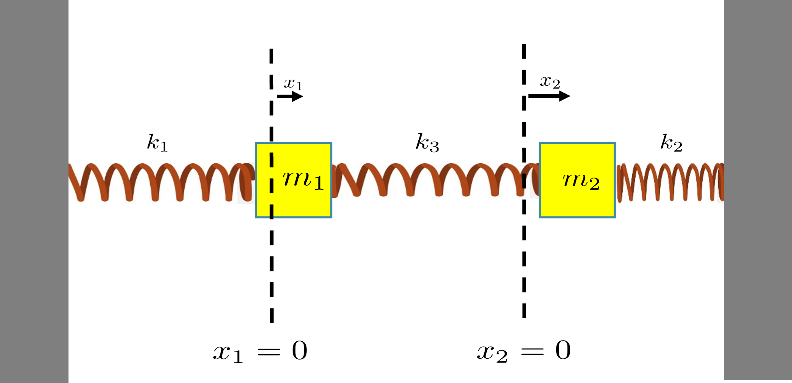
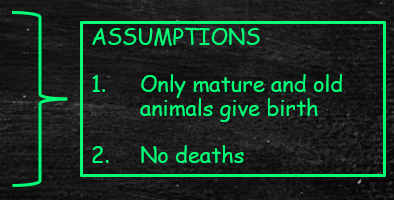

Jonathan Crofts
Nottingham Trent University
Lecturer: Dr Jonathan Crofts
New Hall Block: Room 233
Email: jonathan.crofts@ntu.ac.uk
Lecturer: 11-12, Wednesday ERD 171
Seminars: Group M3, P 13-14, Tuesday CTLB P08
Group M1, M2 - 10-11, Thursday Eng Build 104
9:00-10:00 Monday
Suppose we have a spring-mass system such as the one shown in the figure above
We would like to write down equations describing the behaviour of the system with time; in general these equations will be non-linear, but we can write down a linear system if we make some modelling assumptions
Model assumptions:
i.e. the only forces acting on the masses are due to the springs
Note that
Therefore the force acting on the first mass is
\[ F_1 = -k_1x_1 + k_3(x_2-x_1) \]And the force acting on the second mass is
\[ \begin{align*} F_2 &= -k_3(x_2-x_1)+k_2(-x_2)\\ &= -k_2x_2 - k_3(x_2-x_1) \end{align*} \]Now, using Newton's second law (i.e. $F=ma$) we have
\[ \color{red}{\boxed{\color{white}{ \begin{align*} m_1\ddot{x}_1 &= -k_1x_1 + k_3(x_2-x_1)\\ m_2\ddot{x}_2 &= -k_2x_2 - k_3(x_2-x_1) \end{align*} }}} \]This is a pair of second order ODEs describing the motion of the Spring-mass system
Note that we can rewrite this system of two second order ODEs as a larger system of first order equations
To see this, write
\[ \frac{\mathrm{d}x_1}{\mathrm{d}t} = v_1 \qquad \text{and} \qquad \frac{\mathrm{d}x_2}{\mathrm{d}t} = v_2 \]so that the equations on the previous slide become
\[ \begin{align*} m_1\dot{v}_1 &= -k_1x_1 + k_3(x_2-x_1)\\ m_2\dot{v}_2 &= -k_2x_2 - k_3(x_2-x_1) \end{align*} \]Thus we have four equations which we can write in matrix form as
\[ \color{red}{\boxed{\color{white}{ \frac{d}{dt}\left[\begin{array}{c}x_1\\x_2\\v_1\\v_2\end{array}\right] = \left[\begin{array}{cccc}0&0&1&0\\0&0&0&1\\-\frac{k_1+k_3}{m_1}&\frac{k_3}{m_1} &0&0\\\frac{k_3}{m_2}&-\frac{k_2+k_3}{m_2}&0&0\end{array}\right] \begin{bmatrix} x_1\\x_2\\v_1\\v_2\end{bmatrix} \qquad\text{or} \qquad\frac{\mathrm{d}\mathbf{x}}{\mathrm{d}t} = A\mathrm{x} }}} \]With $A$ the matrix of coefficients and the vector $\mathbf{x} = \begin{bmatrix}x_1&x_2&v_1&v_2\end{bmatrix}^T$
We can use the above technique to write a single $n$th order ODEof the form
\[ \frac{d^nx}{dt^n}+a_1\frac{d^{n-1}x}{dt^{n-1}}+a_2\frac{d^{n-2}x}{dt^{n-2}} +\cdots +a_{n-1}\frac{dx}{dt}+a_nx = 0 \]by a system of first order differential equations by writing
\[ x_1=x, ~x_2=\frac{dx}{dt}, ~x_3=\frac{d^2x}{dt^2},\ldots, ~x_{n}=\frac{d^{n-1}x}{dt^{n-1}} \]so that
\[ \frac{dx_{n}}{dt}+a_1x_{n}+a_2x_{n-1}+\cdots+a_{n-1}x_2+a_nx_1 = 0 \]Then ...
Then
\[ \frac{d}{dt}\left[\begin{array}{c}x_1\\x_2\\x_3\\\vdots\\x_{n-1}\\x_{n}\end{array}\right] =\left[\begin{array}{cccccc}0&1&0&\ldots&0&0\\0&0&1&\ldots&0&0\\0&0&0&\ldots&0&0\\ \vdots&\vdots&\vdots&&\vdots&\vdots\\0&0&0&\ldots&0&1\\-a_n&-a_{n-1}&-a_{n-2} &\ldots&-a_2&-a_1\end{array}\right] \left[\begin{array}{c}x_1\\x_2\\x_3\\\vdots\\x_{n-1}\\x_{n}\end{array}\right] \]Again this can be written in matrix vector form
\[ \frac{\mathrm{d}\mathbf{x}}{\mathrm{d}t} = A\mathbf{x} \]In this course we shall consider solutions of such first order systems
Rewrite the third order ODE
\[ \frac{\mathrm{d}^3x}{\mathrm{d}t^3}+2\frac{\mathrm{d}^2x}{\mathrm{d}t^2}+\frac{\mathrm{d}x}{\mathrm{d}t}+x=0 \]as a first order system of ODEs
Let
\[ x = v_1, \quad \frac{\mathrm{d}x}{\mathrm{d}t} = v_2 \quad\text{and}\quad \frac{\mathrm{d}^2x}{\mathrm{d}t^2} = v_3 \]so that
\[ \frac{\mathrm{d}v_3}{\mathrm{d}t} = -v_1-v_2-2v_3 \implies \color{red}{\boxed{\color{white}{ \frac{d}{dt}\left[\begin{array}{c}v_1\\v_2\\v_3\end{array}\right] = \left[\begin{array}{rrr}0&1&0\\0&0&1\\ -1&-1&-2\end{array}\right] \begin{bmatrix} v_1\\v_2\\v_3\end{bmatrix}}}} \]Suppose that an animal population can be classified in one of three ways
\[ \begin{align*} S_1:&\quad \text{young} (1)\\ S_2:&\quad \text{mature} (1-2)\\ S_3:&\quad \text{old} (2+)\\ \end{align*} \]Then if $y_k$, $m_k$ and $d_k$ are the number in each category at the start of the $k$th year, it follows
\[ \begin{align*} y_{k+1}&=b_1m_k + b_2d_k\\ m_{k+1}&=s_1y_k\\ d_{k+1}&=s_2m_k+s_3d_k \end{align*} \]Here
\[ b_i - \text{ birth rates} \qquad s_i - \text{ survival rates} \] We can draw a state diagram to better understand the process
Just as with the ODE system, we can rewrite the above difference equations describing the animal population using vector-matrix notation as follows:
\[ \mathbf{p}_{k+1} = L\mathbf{p}_k \]Here,
\[ \mathbf{p}_k = \begin{bmatrix}y_k\\m_k\\d_k\end{bmatrix}\quad \text{and}\quad L = \begin{bmatrix}0&b_1&b_2\\s_1&0&0\\0&s_2&0\end{bmatrix} \]